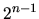

There are currently 3 levels of run-time error checking which can be switched with the compiler flag SAFETY, defined in magnus/back_end/global/global.h.
The values of SAFETY currently defined mean:
We do not expect level 2 to catch all possible errors.
Trap class interface errors quietly wherever reasonable. For example, if an integer parameter size which suggests an initial hash table size should be of the form , but is not, just use the least such integer greater than size.